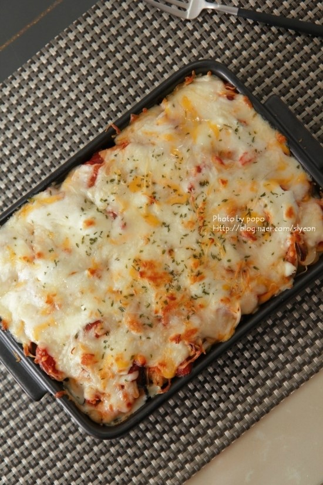

어묵피자
재료
: 납작어무 1장, 모짜렐라 치즈 반줌, 파슬리 약간
소스
- 케찹 2큰술, 이탈리안 허브믹스 약간
납작 어묵은 4~6등분 해서 가지런히 놓습니다.
케찹과 허브 믹스를 뿌려주세요 .
고루 넓게 발라 주세요.
치즈를 듬뿍 올리고 180도 오븐에 7분 가량 굽습니다.
Tip. 오븐이 없다면 전자렌지에 1분30초 혹은 팬 위에 올려 치즈가 녹을 때까지 약불로 가열합니다.